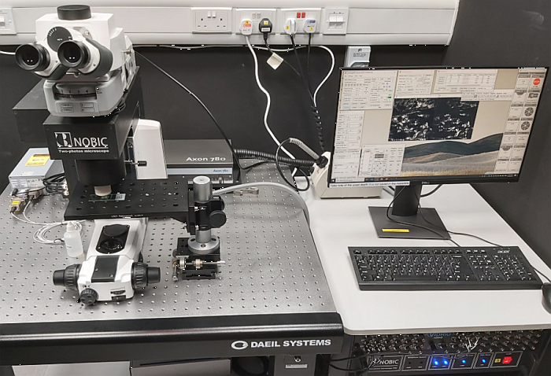

A custom upright 2-photon microscope with a single laser line for 2-photon excited fluorescence imaging and second harmonic generation imaging.
Coherent Axon 780 nm fs-laser
| Usage fees* [SGD/hour] | NTU | Academia | Industry |
| 30 | 66 | 105.6 | |
| Location | ABIF, SCELSE, B2 (SBS-B2n-27P.4) | ||
| Safety Notice | Requires N3 laser license (N2/04107/0169) | ||
| Contact | abif@e.ntu.edu.sg; nobic.facilities@e.ntu.edu.sg | ||
* Long-term discounts of 75% and 95% apply after 8 and 24 hours of continuous usage, respectively.